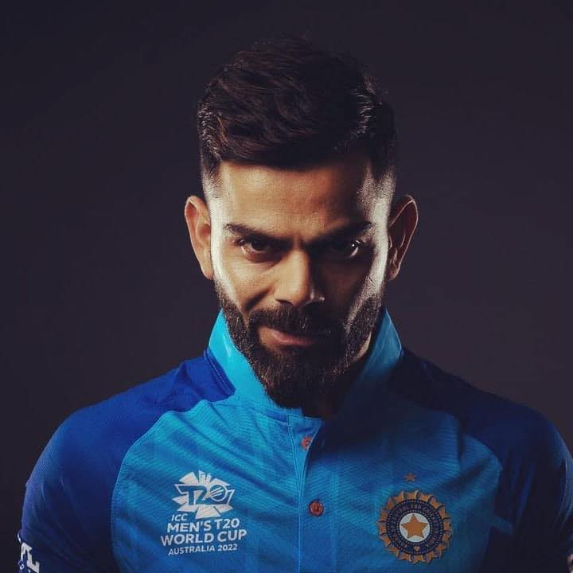

Virat Kohli (born 5 November 1988) is an Indian international cricketer and the former captain of the Indian national cricket team.
This page celebrates his remarkable achievements and contributions to the world of cricket.
Achievements
- Fastest to reach 10,000 runs in ODI cricket
- Most centuries in international cricket as a captain
- First player to score 20,000 runs in international cricket